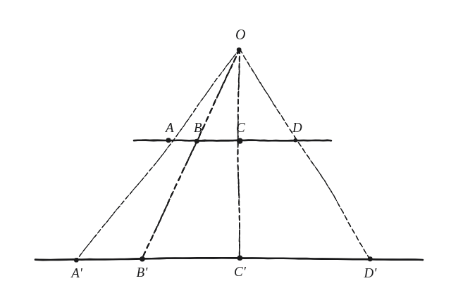
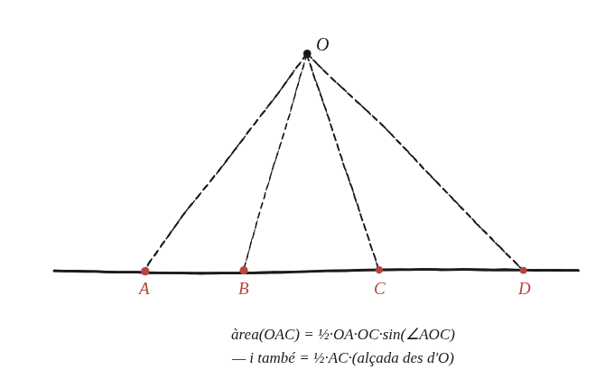

Pots treballar els detalls d'aquesta demostració?

Auditar, no només intuir
Aquí no n'hi ha prou amb la intuïció que "sembla que es manté": cal una comprovació algebraica completa que la raó doble (AC·BD)/(BC·AD) de quatre punts A,B,C,D sobre una recta és exactament la mateixa que la dels seus quatre projectats A′,B′,C′,D′ des d'un mateix punt O cap a una altra recta.
Escriure cada distància amb una àrea
Per a un punt O fora de la recta i dos punts X,Y sobre la recta, l'àrea del triangle OXY es pot escriure de dues maneres: (1/2)·OX·OY·sin(∠XOY), o (1/2)·XY·h (amb h l'alçada des d'O fins a la recta). Igualant-les i aïllant XY: XY = OX·OY·sin(∠XOY) / h.

Aplicar-ho a les quatre distàncies
Amb la mateixa fórmula aplicada a cadascuna de les quatre distàncies que apareixen a la raó doble: AC = OA·OC·sin(∠AOC)/h, BD = OB·OD·sin(∠BOD)/h, BC = OB·OC·sin(∠BOC)/h, AD = OA·OD·sin(∠AOD)/h. L'alçada h és la mateixa per a totes quatre, perquè totes provenen del mateix punt O i la mateixa recta.
Substituir i veure què es cancel·la
Substituint les quatre expressions a la raó doble (AC·BD)/(BC·AD): totes les OA, OB, OC, OD i totes les h es cancel·len completament. El que en queda és exactament [sin(∠AOC)·sin(∠BOD)] / [sin(∠AOD)·sin(∠BOC)] —una expressió que ja no depèn de les distàncies concretes, només dels angles vistos des d'O.
Per què això demostra la invariància
Els punts projectats A′,B′,C′,D′ són sobre les mateixes quatre semirectes que surten d'O —el mateix feix de rectes, només que tallat per una segona recta en lloc de la primera. Els angles ∠A′OC′, ∠B′OD′, etc. són, doncs, exactament els mateixos angles que ∠AOC, ∠BOD, etc. Com que la raó doble només depèn d'aquests angles (un cop cancel·lades les distàncies), la raó doble dels punts projectats ha de ser idèntica a la dels originals.
La raó doble (AC·BD)/(BC·AD) de quatre punts sobre una recta es preserva exactament sota qualsevol projecció des d'un punt cap a una altra recta. Escrivint cada distància amb la fórmula d'àrea d'un triangle (OX·OY·sinàngle/h), totes les distàncies a O i l'alçada h es cancel·len de la raó doble, deixant una expressió que només depèn dels angles del feix des d'O —els mateixos per als punts originals i els projectats.
Comprovació
A,B,C,D a x=0,2,5,9: raó doble=(5)(7)/(3)(9)=35/27≈1,296. Projectant aquests quatre punts des d'un punt O=(3,7) cap a una segona recta (y=−x+20): els quatre punts projectats surten A′=(6,14), B′=(4,25;15,75), C′=(−1,21), D′=(−57,77), i la seva raó doble torna a sortir exactament 1,296.